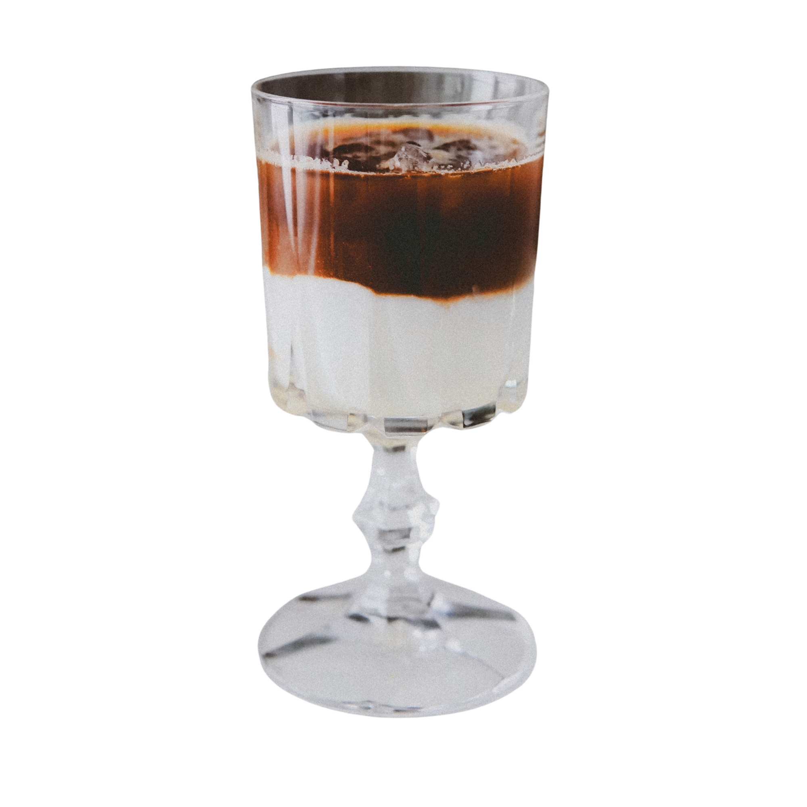

01

Espresso · Creamy · Cold
Cloud Nine
A calm, dramatic meeting of dark espresso and cold milk.
Cloud Nine arrives in clean layers: milk below, espresso above, and ice between them. Stir it for a balanced cup or sip slowly to notice the flavor change from bold to mellow.
Read tasting notes →